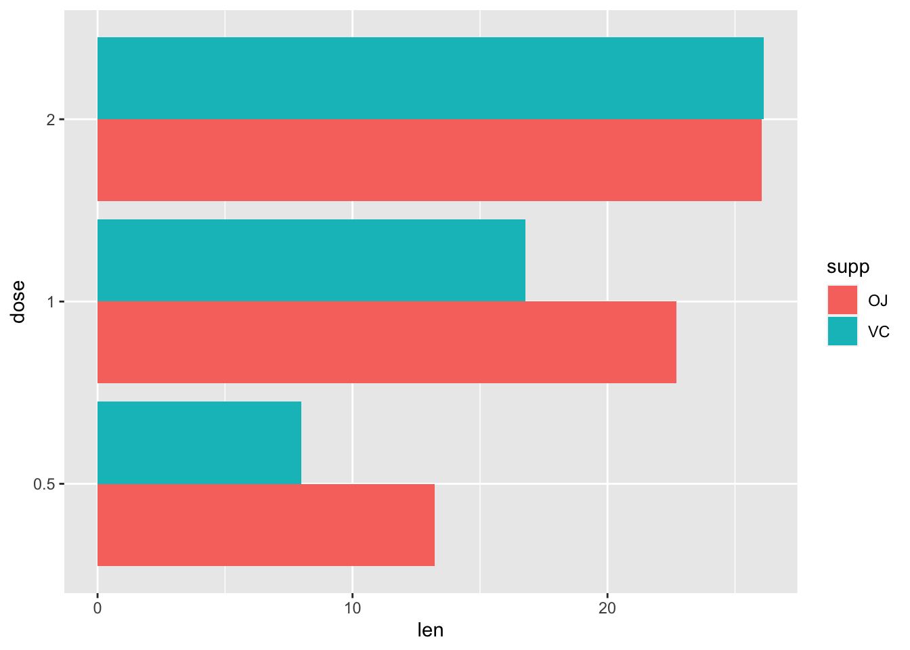
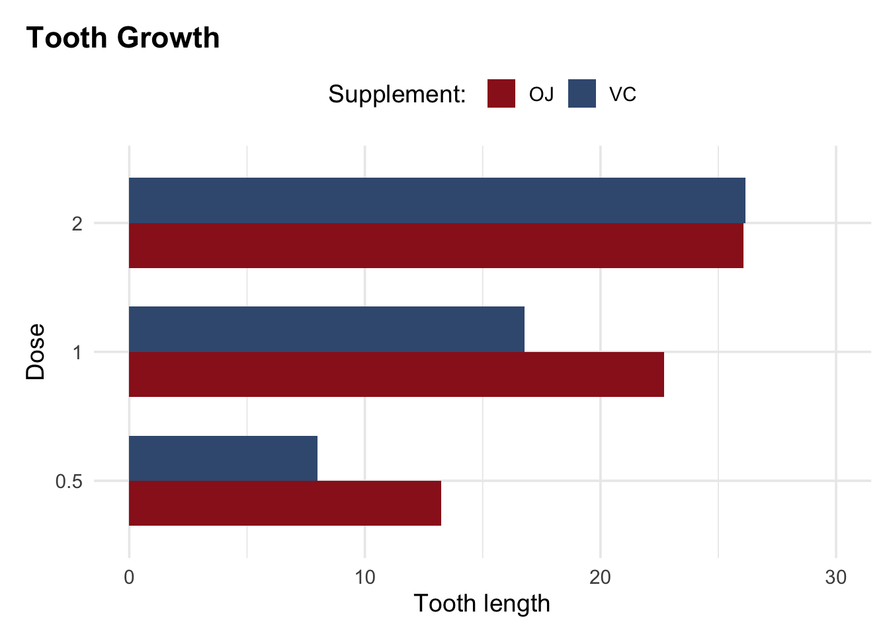

이 글은 RSS(왕립통계학회)에서 배포한 2023년 데이터 시각화 가이드를 요약한 글입니다.
원본은 여기에서 확인할 수 있습니다.
들어가며..
통계는 데이터를 수집 분석하고 표현하고 해석하는 과학이다. 2023년 브래태니카 백과사전에 정의된 통계학에 대한 정의입니다. 데이터의 표현은 의사 결정을 보조하는 핵심 수단 중 하나입니다. 이 가이드의 목적은 이 데이터의 표현을 좀 더 잘 하는 데에 있습니다.
좋은 데이터 시각화를 위해서는 데이터 표현의 기술적 측면에 대한 이해가 필요합니다. 물론 창의적 요소도 잊어서는 안되겠지요. 전달하고자 하는 ’스토리’를 정하고, 해당 스토리를 가장 효과적으로 전달할 수 있는 디자인에 대한 결정이 이루어져야 합니다.
이 가이드는 데이터 시각화의 두가지 측면 : 예술과 과학 이 모두를 다룹니다. 주로 왕립통계학회의 간행물 (Significance Magazine, the Journal of the Royal Statistical Society Series A)의 기고자를 위해 작동되었으나, 이 정보가 모든 데이터 시각화 작업에 유용할 것으로 믿습니다.
이 가이드의 가장 중요한 목표는 독자가 데이터 시각화를 만들기 위한 기초를 만들도록 하는 것입니다. 데이터 시각화의 이유에서 부터 시작하여, 차트와 표의 구조, 이 구조를 개선하는 방법 등에 대해 배울 것 입니다.
이 가이드를 작성하며 저자들은 해당 분야의 전문가들이 만든 훌륭한 교과서, 논문 및 기타 자료를 활용했습니다.
우리가 데이터를 시각화 하는 이유
데이터 시각화는 데이터의 패턴을 식별하고 메시지를 전달하는 효율적인 수단입니다. 모든 시각화의 목표는 보는 사람이 데이터를 이해하고 정보를 추출할 수 있도록 하는 것입니다.
시각화를 만들 때는 독자의 배경을 고려하는 것이 중요합니다.(Krause, A. 2013)
해석은 보는 사람의 눈에 달려 있으며, 시각화는 독자를 염두에 두고 디자인해야지 메시지를 성공적으로 전달할 수 있습니다.
시각화의 원칙과 구성 요소
시각화의 일반적인 목적은 서로 다른 데이터 그룹을 비교하는 것입니다. (예 : 서로 다른 유형의 치료를 받는 환자 군의 비교)
축, 레이블 및 기호를 잘 선택하면 데이터의 패턴을 쉽게 식별할 수 있는 반면, 잘못 선택한 시각화는 정보 추출이 어려울 수 있습니다.
차트의 구성 요소
- Layout (panels, facets)
- 레이아웃은 효율적인 비교를 위해 고려해야할 요소입니다.
이 시각화와 같이 X축 Y축 어떤 축을 비교하느냐에 따라 레이아웃은 달라져야합니다.
- Aspect ratio
- 각 축의 비율에 따라 데이터가 왜곡되는 경우가 있습니다. 데이터를 효율적으로 전달하기 위한 의도된 왜곡이라면 상관이 없지만 대부분의 경우 1:1 비율로 왜곡을 없애는 것이 바람직합니다.
이 시각화는 같은 데이터가 비율에 따라 어떻게 왜곡되는지 보여줍니다.
- Lines
- 선은 순서를 나타냅니다. 순서가 없는 경우 데이터를 선으로 연결해서는 안됩니다. 서로 다른 그룹이 있을 경우 서로 다른 선 유형을 선택하는 것이 도움이 됩니다. 특히 선 스타일에서 순서가 있으면 도움이 됩니다. (예: 선 두께, 색상의 진함이 갈수록 증가함)
- Points
- 시각화에서 데이터를 의미있는 방식을 표시할 수 있도록 포인트의 기호를 선택해야 합니다. 데이터가 많을 경우, 기호가 겹치는 것을 방지하기 위하여 열린 원이나 작은 기호를 사용하는 것이 좋습니다. 데이터가 불연속적이고 관측값이 겹치는 경우 jitter을 고려해야 합니다.
- Colours
- 색은 다른 그룹을 식별하는 데 도움이 되어야 합니다. 단순한 장식용 색은 사용하지 않는 것이 좋습니다.
- Axes
- 축은 다른 범위를 선택해야하는 타당한 이유가 없는 한 일반적으로 0에서 시작해야 합니다. 데이터에 음수가 없을 경우 축이 음수로 늘어지면 안되며, 특히 음수 값에 눈금 표시가 없어야 합니다.
- 상대적인 변화 또는 비율이 표시되는 경우 해당 축은 로그여야 합니다.
- X 데이터와 Y 데이터 모두에 대한 비교가 필요할 경우, 축의 한계 및 눈금은 동일해야 합니다.
이 시각화는 같은 데이터이나, 범위를 다르게 한 경우입니다. 우측의 시각화가 변화를 왜곡하여 보여줌을 알 수 있습니다.
이 시각화는 기준 값(빨간선)과 비교하였을 때 데이터들이 그 주변을 분포하고 있음을 보여줍니다. 데이터의 절반은 평균 아래, 절반은 평균 위에 위치합니다. 하지만 선형 축을 사용하는 왼쪽 시각화의 경우 이러한 데이터의 분포를 잘 보여주지 못합니다. 로그 축을 사용하는 우측의 시각화의 경우 기준선을 중심으로 데이터가 고르게 분포함을 알 수 있습니다.
- Symbols
- 기호는 직관적이어야 합니다. 예를 들어, +기호는 긍정적인 결과 -기호는 부정적인 결과
- 삼각형, 원, 사각형과 같은 기호는 직관적인 의미가 없으나, 데이터에 순서가 있는 경우 변의 개수를 이용할 수 있습니다 (점, 선, 삼각형, 사각형 …)
- Legends
- 범주는 너무 많은 관심을 끌어서 안되며, 데이터를 가려서도 안됩니다. 이는 그림의 여백에 배치되거나 그림 아래의 작은 텍스트로 표현되어야 합니다.
- Orientation
- 데이터에 순서가 있는 경우 막대형 차트를 가로로 표시하고 값을 위에서 아래로 정렬하는 것이 세로 막대를 왼쪽에서 오른쪽 방향으로 표시하는 것보다 더 직관적입니다.(Few 2004, 182)
- 시계열 데이터의 경우, 예외로 세로형 막대를 왼쪽에서 오른쪽 방향으로 표시하는 것이 더 직관적인데, 일반적으로 과거에서 미래가 왼쪽에서 오른쪽으로 표현되기 때문입니다.
- Auxiliary elements
- 차트를 디자인할 때, Tufte가 “차트 정크” 라고 정의한 정보를 추가하지 않는 모든 요소는 배제되어야 합니다.
- Three-dimensional charts
- 3D 차트는 멋져보일 수 있으나 데이터를 왜곡하기에 대부분의 경우 적절치 않습니다.
표의 구성 요소
표는 차트와 마찬가지로 효율적인 시각화 수단 중 하나이지만, 제대로 표시되지 않으면 읽기 번거롭습니다. 하지만 데이터의 수가 적거나 정확한 숫자를 표시해야하는 경우는 차트보다 나은 수단입니다. 표에서의 디자인 요소에대해 알아봅시다.
- Layout
- 레이아웃은 행과 열을 뜻합니다. 일반적으로 숫자를 가로보다 세로로 비교하는 것이 쉽기에 이를 고려하여 디자인해야 합니다.
- Digits
- 자릿수는 일관되어야 합니다. 불필요한 정밀도는 피해야 하며 자릿수가 적을수록 읽기 쉽습니다.
- Alignment
- 숫자는 큰 숫자와 작은 숫자를 식별할 수 있도록 오른쪽 정렬합니다.
- Multiple numbers in table cells
- 하나의 셀에 여러 값이 포함될 때 이를 쉽게 읽을 수 있도록 중요한 숫자의 글꼴 크기를 그게 할 수 있습니다. 하지만 하나의 셀에 여러 값이 포함되는 경우는 대부분 추천하지 않습니다.
- Orientation
- 가로 방향으로 긴 표는 권장하지 않습니다. 문서의 대부분은 세로로 작성되기에, 이를 회전하는 것은 독자에게 번거롭습니다.
- Fonts and colours
- 특정 값을 강조하기 위해 다른 글꼴 및 색을 사용할 수 있습니다. 하지만 단순 장식으로 사용하는 것은 권장하지 않습니다.
시각화 시작하기
목표 및 대상
어떤 유형의 데이터 시각화를 만들지 결정하는 과정은 간단한 질문에서 시작합니다 : 내가 이 작업을 하는 이유는 무엇인가?
데이터시각화는 목적에 부합해야하므로 모든 결정은 그래픽의 의도된 목적을 명확히 이해하는 데서 출발해야 합니다.
볼로냐 대학 통계 교수 Christian Hennig는 다음과 같은 질문을 통해 작업할 것을 제안합니다:
- 그래프의 목적이 분석인가? 아니면 다른 사람에게 정보 전달인가?
- 무엇을 알기를 원하는가?
- 그래프의 소비자는 누구인가? (자신 포함)
체크리스트
어떤 디자인적 의사결정을 할 때 : - 데이터 시각화의 의도된 목적을 다시 한번 생각해야 합니다. - 데이터 시각화의 소비자를 이해하고, 그들이 어떤 수요를 가지고 있는지 어떤 것에 친밀한지 고려해야 합니다.
시각화 타입
이 포스터에서는 데이터에 따라 어떤 시각화를 쓰는 것이 적절한지를 보여줍니다.
{kind=link}
자신이 가진 데이터 타입에 따라 해당 링크에서 어떤 시각화가 적절한지 볼 수 있습니다.
차트 스타일링
차트 스타일링의 원칙
아래 두 차트는 동일한 데이터의 동일한 유형의 차트입니다. (기니피크 치아 성장 데이터를 이용한 Bar Plot)
하지만 두 차트의 인상은 확연히 다릅니다. 색상, 텍스트 주석, 글꼴 크기, 레이블과 같은 추가 정보가 차트를 훨씬 더 쉽게 해석할 수 있도록 만들어 줍니다. 이 섹션에서는 이러한 각 요소를 살펴보고 차트의 접근성과 해석도를 개선하기 위한 스타일 지정법을 알아보겠습니다.

Colours
색상은 데이터 시각화에 큰 영향을 미치는 요소 중 하나입니다. 올바른 색상은 전달하려는 스토리를 강조하는 데에도 도움이 됩니다.
색상을 선택하기 전에, 여기에 정말 색상을 사용해야 하는가라는 질문을 해보십시오. Beecham 등의 연구에 따르면 색상이 적게 사용될 때 더욱 직관적입니다.
위의 차트 예시와 같이, 모든 막대에 다른 색을 사용하는 것 보다 특정 요소만을 강조하는 것이 더 낫다는 것을 확인할 수 있습니다. 하지만 테이터 요소를 구별하는 유일한 요소로 색상에만 의존하는 것 역시 좋지 않습니다. 아래의 예를 확인해 봅시다.
이 예시에서 확인 가능하듯이, 일본과 미국을 단순히 색으로 구분했을 때 보다 모양까지 변화시켰을 때 구분이 더 쉬움을 알 수 있습니다.
Types of Colour palette
색상표는 일반적으로 세가지로 분류할 수 있습니다 :
- Sequential : 온도와 같이 낮은 값에서 높은 값으로 정렬된 데이터를 시각화 하는데 사용합니다.
- Diverging : 평균 온도보다 높거나 낮은 일수를 나타낼 때와 같이 중요한 지점에서 두 방향으로 갈라지는 데이터를 시각화 할 떄 사용합니다.
- Qualitative : 범주 간 차이의 크기와 순서가 의미가 없는 데이터에 사용합니다.

Accessible colour palettes
모든 독자들에게 색상은 서로 구별되어야 합니다. 그러나 색맹에는 여러가지 형태가 있고, 이로 인하여 일부 색상이 구분되지 않을 수 있습니다. 색맹 검사기(“Colibs - 색맹 시뮬레이터”)를 사용하면 다양한 유형의 색맹에서 어떻게 보이는지 확인할 수 있습니다. Pual Tol은 색상 선택에 대한 매우 유용한 리소스와 몇가지 팔레트를 제공한 바 있습니다.
차트가 흑백으로 인쇄될 때를 대비하여 휘도가 비슷한 색상은 피하는 것이 좋습니다. 또한 색상은 데이터와 적절하게 일치해야합니다. 예를 들어 여성과 남성 데이터에 분홍색과 파란색을 선택하는는 등 고정관념에 빠지지 않아야 합니다. 좋은 것은 빨간색, 나쁜 것은 초록색과 같이 일반적인 색상 연상을 뒤집는 것 역시 부적절합니다.
색상 선택에 관해 요약해 봅시다 :
- 사용하는 색상의 수를 최소화합니다.
- 색맹 친화적 색상인지, 흑백으로 보았을 때 대비가 되어있는지 확인합니다.
- 색상 팔레트 유형이 데이터 유형과 일치하는지 확인합니다.
- 비색 요소를 사용하여 서로 다른 그룹을 구분합니다.
- 색상에 대한 고정관념 과 혼란스러운 연상을 피합니다.
Annotations
주선은 차트에서 독자가 이해하는데에 도움이 되도록 설명을 추가하는 텍스트를 의미합니다. 주석은 세부 정보를 추가하거나, 흥미로운 요소를 강조하거나, 차트를 해석하는 방법을 명시할 수 있습니다. 이러한 주석은 독자에게 매우 유영할 수 있으나, 너무 많은 주석은 주의를 산만하게 하고 요점에 집중하기 어렵게 합니다.
주석의 가장 일반적인 사용처는 라인 그래프 또는 막대 차트에서 데이터에 직접 레이블을 추가하는 것입니다.

Fonts
글꼴 선택은 데이터 시각화를 이해하기 쉽게 만드는 데 있어 핵심 요소입니다. 일부 글꼴은 다른 글꼴보다 읽기 쉬우며, 시각 장애가 있거나 난독증과 같은 학습 장애가 있는 경우 특히 그렇습니다. 글꼴을 잘못 선택하면 상당수의 청중이 시각화에 액세스할 수 없게 될 수 있습니다.
Font Size
글꼴이 클수록 읽기 쉽습니다. 일반적으로 인쇄물이나 웹사이트의 글꼴 크기는 12pt 이상을 사용하는 것이 좋습니다. 프레젠테이션을 제작하는 경우 글꼴 크기는 36pt 이상이어야 회의실 뒤쪽에 있는 사람들도 잘 볼 수 있습니다.
Font Family
어떤 글꼴 계열을 사용하는 것이 좋을까요? 글꼴에는 세가지 유형이 있습니다
- Serif : 세리프는 글꼴에서 나타나는 긴 획의 끝에 있는 작은 획입니다. 이러한 세리프가 있는 글꼴을 세리프 글꼴이라고 합니다.
- Sans serif : 세리프가 없는 글꼴을 산세리프 글꼴이라고 합니다.
- Monospace: 모노스페이스 글꼴은 각 문자가 동일한 너비를 차지하는 글꼴입니다.
어떤 글꼴 유형이 더 접근하기 쉬운지에 대한 합의된 기준은 없습니다. 산세리프 글꼴의 단순함은 시작 장애가 있는 독자가 더 쉽게 읽을 수 있도록 하지만, 난독증 환자는 문자를 구분하기 더 어렵습니다. 세리프 글꼴은 장식 선이 글자의 모양을 방해하기에 읽기 어려울 수 있으며, 특히 화면의 픽셀화로 인한 디지털 출판물에서 더욱 그렇습니다. 온라인에 표시되는 이미지 텍스트에는 세리프 글꼴을 사용하지 않는 것이 좋습니다.
Arial, Calibri, Verdana와 같은 일반적인 산세리프 글꼴들은 접근 가능성이 높지만, Dyslexie와 OpenDyslexie와 같은 글꼴들은 난독증 환자의 가독성을 돕기 위해 특별이 고안된 글씨체로, 글자 하단의 넓이을 넓혀 글자가 움직이는 현상을 줄여줍니다. Atkinson Hyperlegible은 미국 점자협회에서 개발한 글꼴로 저시력자가 글꼴을 쉽게 구분할 수 있도록 설계되었습니다. 일부 글꼴은 매우 유사하게 보이는 문자들이 있습니다. 예를 들어 1과 소문자 l과 대문자 I는 종종 구분하기 어렵습니다. Source Sans Pro나 Verdana는 이를 모두 구분할 수 있습니다.
Font Face
굵게, 기울임과 같은 글꼴 효과를 사용해 텍스트의 특정 부분을 강조할 수 있습니다. 그러나 이탤릭체로 강조하는 것은 우리의 기대와 달리 주위를 더 산만하게 합니다. 굵은 텍스트를 이용하여 강조하도록 합시다.
Alt Text
대체 텍스트는 차트를 포함하여 이미지의 시작적 측면과 목적을 설명하는 텍스트입니다. 대체 텍스트의 주 목적은 시각 장애가 있는 사용자가 화면리더로 대체 텍스트를 듣고 이를 해석하는데 도움을 주기 위한 것입니다.
Green(2023)에서는 시각 장애가 있는 사람들이 차트의 콘텐츠를 놓치지 않도록 데이터 시각화에 대체 텍스트를 추가하는 것의 중요성에 대해 설명합니다. Cesal(2020)은 데이터 시각화에 대한 대체 텍스트를 작성하는 데 도움이 되는 간단한 구조를 제공합니다.